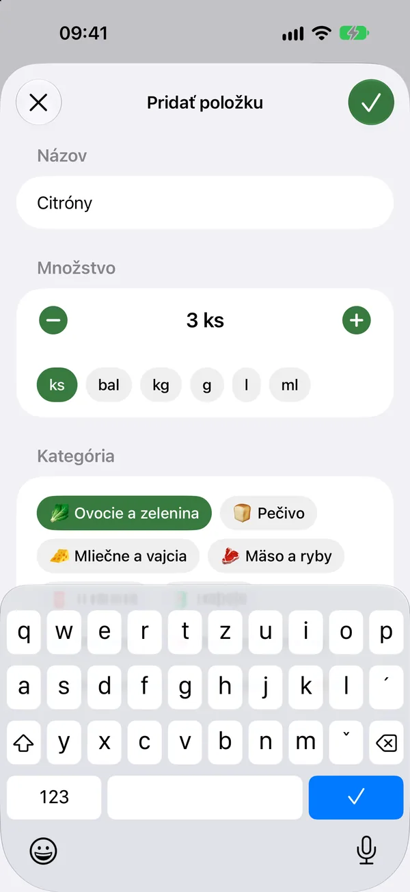

Ako vytvoriť nákupný zoznam na iPhone
-
Krok 1 Otvorte nákupný zoznam
Po spustení Shoppie ste rovno v karte Zoznam s predvoleným zoznamom Potraviny. Netreba nič zakladať ani sa registrovať.

-
Krok 2 Ťuknite na +
Ťuknite na zelené tlačidlo + dole. Otvorí sa okno Pridať položku.
-
Krok 3 Napíšte názov a množstvo
Do poľa Názov napíšte, čo chcete kúpiť, napríklad citróny. Množstvo nastavíte zelenými tlačidlami − a + a vyberiete jednotku (ks, bal, kg, g, l, ml). Kategóriu Shoppie pri bežných produktoch doplní sám.

-
Krok 4 Potvrďte
Ťuknite na zelenú fajku ✓ vpravo hore, alebo stlačte Enter na klávesnici. Položka je v zozname.
-
Krok 5 V obchode položky odškrtávajte
Keď vec vložíte do košíka, ťuknite na krúžok pri položke. Presunie sa do časti V košíku.
Časté otázky
Je aplikácia Shoppie zadarmo?
Áno. Shoppie je zadarmo, bez reklám a bez registrácie. Funguje na iPhone s iOS 26 a novším.
Musím sa registrovať?
Nie. Shoppie nepotrebuje účet. Údaje sú vo vašom iPhone a vo vašom súkromnom iCloude.
Ďalšie otázky nájdete na stránke Podpora.